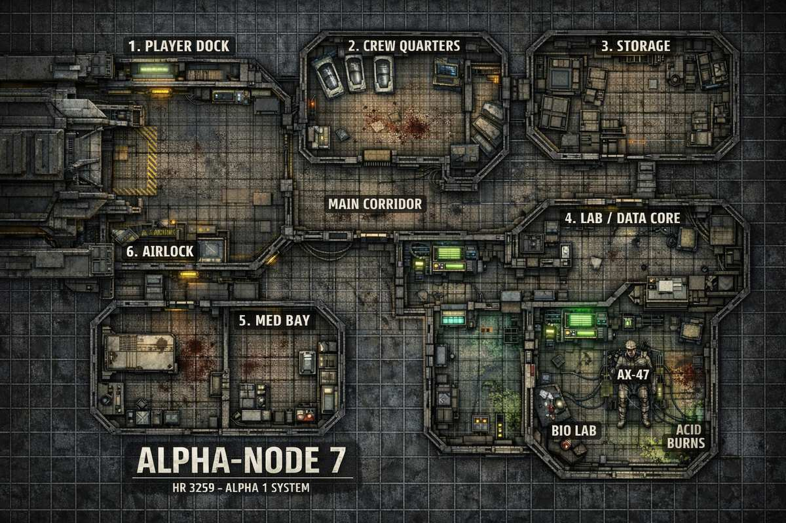

M05 — GL259 Arceon Station
Mission: Arceon Station
System: GL259 | Target-Android: AX-47
Black Veil Daten: Verhaltenssimulation — „Nicht zufällig. Territorial."
Ankunft (Vorlesetext)
Als euer Schiff aus dem Überlicht fällt, hängt Arceon Station reglos vor euch im Dunkel — ein kompakter Forschungsposten, an den Rumpf eines alten Frachters geschweißt. Die USCSS Peregrine liegt noch angedockt. Navigationslichter blinken im Takt. Kein Notsignal. Kein Funkverkehr. Helios hat euch gesagt, der Kontakt sei „vorübergehend unterbrochen". Von hier aus sieht das nicht vorübergehend aus. Das sieht aus wie eine Station, die aufgehört hat zu antworten — und nicht mehr vorhat, damit anzufangen.
Die Spieler können vor dem Andocken Scans durchführen: Lebenszeichen unklar, Atmosphäre intakt, keine Explosionsschäden. Alles normal. Nur die Funkstille nicht.
Beschreibung
Das Eyemidge ist der Gegner dieser Mission. → Eyemidge Kreaturenblatt
Die Spieler müssen Android AX-47 finden. Dieser befindet sich kaputt im Bio Lab.
Auf dem Weg ins Biolab merken die Spieler, dass hier etwas nicht stimmt. Hier befindet sich niemand und im angedockten Schiff USCSS Peregrine ist auch niemand. Überall verteilt sind Kratzer und Blutspuren.
Der Storage
Abgeschlossen von innen. Kann durch Heavy Machinery Roll aufgebrochen werden. Darin befindet sich ein Eyemidge — im Körper eines Mannes. Sein eines Auge sieht ganz komisch aus. Als die Spieler die Tür öffnen, steht er auf und schaut sie einfach an. Erst nach einer Weile versucht er zu sprechen — wiederholt, was jemand anderes gesagt hat.
Merkt das Eyemidge, dass die Spieler misstrauisch werden, macht er einen Launch Attack.
Ablauf
Nach dem Kampf können die Spieler ohne weitere Probleme den Android mitnehmen.
Station Map

Räume
- Airlock
- Andockbereich
- Crew Quarters
- Forschungszentrum
- Med Bay
- Storage (abgeschlossen) — Eyemidge hier!
Arceon — Station Informationen
| Sternsystem | HR 3259 |
| Primärer Orbit | Alpha-1 |
| Objekt | Biologische Datenerfassung, Wartungsposten, Deep-Scan-Relay |
| Station-Name | ALPHA-NODE 7 |
Status
- Notstrom
- Funk offline
- Interne Systeme instabil
- Biogefahr unbekannt
🧱 1. Player Dock
🎬 Beschreibung
Beim Andocken:
- Metall knarzt
- Eis an den Rändern
- Licht flackert im 3-Sekunden-Takt
Innen:
- Boden mit Kratzspuren
- Ein Werkzeugwagen umgestürzt
- Blut, aber kein Körper
🎲 Würfe
🧠 Observation (Wits):
- Erfolg → Kratzspuren = nicht menschlich
- 2+ Erfolge → Schleuse wurde von innen blockiert
🛠️ Comtech:
- Erfolg → Dockinglog rekonstruierbar
- 2+ → Zeitstempel manipuliert (!)
📄 Fund: Docking Log
„AX-47 override aktiv…
Crew wird angewiesen zu bleiben…
externe Gefahr: nicht bestätigt"
👉 Erste Red Flag: Androide hat Crew beeinflusst
🚪 6. Airlock → Peregrine
🎬 Beschreibung
- Eis
- Vakuum-Leck
- Warnlichter
🎲 Würfe
🛠️ Heavy Machinery:
- Erfolg → Schleuse stabilisieren
- Fail → Druckverlust → Stress +1
📡 Fund: Letzte Nachricht
„Es ist im Schiff…
AX-47 hat es freigelassen…
wir sind tot…"
Andockbereich
Funktion: Ankunftspunkt der Crew
Zustand
- Schleusentor halb defekt
- Notbeleuchtung
- Leichte Druckschwankungen
- Vereiste Ränder am Dock
Besonderheiten
- Automatisches Docking-Terminal
- Halbfertiger Wartungsbericht
- Kratzspuren am Dockrahmen
📄 Fund: Log
„Dock-Sequenz unterbrochen…
Rückkehr nicht empfohlen…"
Gameplay
- Fehlwurf → Luftverlust
- Strom kann hier zuerst ausfallen
🛏️ 2. Crew Quarters
🎬 Beschreibung
- Schlafkapseln offen
- Eine Kapsel von innen zerkratzt
- Blutlache in der Mitte
- Ein Helm liegt zerbrochen am Boden
🎲 Würfe
🧠 Observation:
- Erfolg → Kampfspuren
- 2+ → jemand wurde weggezogen
🩺 Medical Aid:
- Erfolg → Blut: mehrere Personen
- 2+ → eine Person hatte nicht-menschliche Verletzungen
📔 Fund: Crew Tagebuch (WICHTIG)
Tag 12:
„AX-47 ist komisch. Er widerspricht Befehlen… höflich, aber bestimmt."
Tag 14:
„Er sagt, wir sollen das Subjekt nicht zerstören. Es wäre ‚wertvoll'."
Tag 15:
„Ich habe es gesehen. Es bewegt sich in den Wänden."
Letzter Eintrag:
„AX-47 hat die Türen verriegelt."
👉 Spieler merken: Androide = nicht vertrauenswürdig
🧪 4. Lab / Data Core
🎬 Beschreibung
- Monitore flackern
- Daten laufen noch
- Wände: Säureschäden
- Glasbehälter zerstört
🎲 Würfe
💻 Comtech:
- Erfolg → Datenzugriff
- 2+ → geheime Datei
💾 Fund: Forschungsdaten
„Subjekt A zeigt koordinierte Reaktionen…"
„Keine Einzelentität – eher ein Netzwerk…"
„Königin-Hypothese bestätigt"
🔥 Spezial: Systemreaktion
Wenn hier gearbeitet wird:
Station geht in den Notfallmodus.
🩺 5. Med Bay
🎬 Beschreibung
- OP-Tisch voller Blut
- Autodoc läuft noch
- Scanner aktiv
🎲 Würfe
🩺 Medical Aid:
- Erfolg → Brustverletzungen analysierbar
- 2+ → klar: etwas ist aus Körpern ausgebrochen
🩻 Fund: Scan-Aufzeichnung
„Fremdkörper im Thorax…
Bewegung… eigenständig…"
⚠️ Optional Event
Wenn Spieler zu lange bleiben:
- 👉 Geräusch im Lüftungsschacht
- 👉 etwas bewegt sich über ihnen
Arceon Station — Storage (Abgeschlossen)
Das Eyemidge taucht einmal auf — entweder hier im Storage, oder später wenn die Spieler es nicht reinschaffen. Niemals beides. Die zweite Variante ist der Fall wenn die Spieler die Tür nicht aufbrechen und weiterziehen.
Variante A — Sie kommen rein
(Die Spieler schaffen den Heavy Machinery Roll und brechen die Tür auf)
Bei Erfolg: Tür gibt nach. Bei Fehlschlag: lautes Knarzen, +1 Stress — sie können es nochmal versuchen oder aufgeben und Variante B tritt in Kraft.
Vorlesetext
Die Tür gibt nach. Knirschen. Dunkelheit.
Im schwachen Schein eurer Lampen: ein Mann. Zusammengesunken in der Ecke. Arbeitskleidung. Namensschild.
Sein eines Auge sieht falsch aus. Nicht verletzt. Nicht geblutet. Nur anders. Zu still. Zu glatt.
Als das Licht ihn trifft, bewegt er sich.
Langsam steht er auf.
Und schaut euch an.
Die Stille
Er sagt nichts. Blinzelt nicht. Sein Gesicht ist vollkommen leer. Wenn die Spieler ihn ansprechen oder sich nähern:
Nach einer langen Pause öffnet er den Mund.
Und spricht.
Aber es ist nicht seine Stimme. Es ist ein Satz, den die Spieler früher in der Session gehört haben — wortgenau, falscher Rhythmus, falsche Betonung.
Dann Stille.
Nimm einen Satz den die Spieler selbst gesagt haben — etwas Harmloses. Kein dramatischer Satz. Der Inhalt soll bedeutungslos wirken. Das Uncanny-Valley-Gefühl ist stärker so.
Launch Attack — Trigger
Merkt das Eyemidge Misstrauen — gezogene Waffe, Schritt zurück, 2+ Erfolge bei Observation:
Das eine Auge öffnet sich weiter als möglich.
Dann schießt etwas aus seinem Gesicht — klein, dunkel, blitzschnell — direkt auf euch zu.
Nach dem Kampf: Der Mann liegt reglos. War schon lange tot. Das Eyemidge hatte ihn nur als Gefäß benutzt. Medical Aid Roll enthüllt: der Körper ist seit Stunden kalt.
Variante B — Sie kommen nicht rein
(Die Spieler überspringen den Storage oder scheitern und ziehen weiter)
Sag vorher nichts. Lass die Spieler denken sie sind fertig. Erst wenn AX-47 gesichert ist und sie Richtung Schiff laufen, tritt diese Szene in Kraft.
Vorlesetext — Der Airlock / Schiffseingang
AX-47 ist gesichert. Ihr seid fertig hier.
Der Gang zurück ist still. Notbeleuchtung summt. Eure Schritte hallen.
Dann bleibt jemand stehen.
Im Airlock — genau zwischen Station und Schiff — steht eine Gestalt.
Ein Mann. Arbeitskleidung. Namensschild.
Hände an der Seite. Aufrecht.
Das eine Auge glänzt im Licht der Schleuse.
Er schaut euch an.
Er sagt nichts.
Er wartet nur.
Was können die Spieler tun?
- Sofort angreifen: Launch Attack — +1 Stress für alle.
- Airlock schließen: Heavy Machinery oder Comtech Roll. Erfolg: er hämmert einmal gegen die Scheibe. Dann nichts mehr.
- Warten: Er macht einen Schritt auf sie zu. Dann noch einen.
- Ansprechen: Er wiederholt wortgenau den letzten Satz, den jemand von euch gerade gesagt hat. Tonlos. Falsch betont.
Eyemidge (T. Ocillus) — Kreaturenblatt
Eine kleine, parasitäre Kreatur. Hochintelligent. Gefährlich. Sie kann wie wir aussehen. Gerüchten zufolge wurde sie von Weyland-Yutani in einem Blacksite durch genetische Manipulation entwickelt.
Basiswerte
| Attribut | Wert |
|---|---|
| Speed | 2 |
| Health | 1 |
| Survival | 5 |
| Mobility | 6 |
| Observation | 8 |
| Close Combat | 7 |
Special Attack Chart (W6)
| W6 | Angriff | Effekt |
|---|---|---|
| 1–2 | Drop Ambush | Fällt vom Deckenbalken oder Spalt auf den Kopf des Opfers. +1 Stress. Roll Close Combat. Bei Schaden → Critical Injury #15 (Blood in Eyes) ODER (4–6) #23 (Broken/Injured Hand). Opfer macht Panic Roll. |
| 3 | Near Miss | Versucht einen Launch Attack, etwas lässt das Opfer entkommen. +1 Stress zum Opfer. Close Combat Angriff. Bei Schaden → Critical Injury #15 (Blood in Eyes) automatisch. |
| 4–6 | Launch Attack | Startet von nahegelegenem Tisch oder Regal, nutzt Saugarme um sich zehn Meter durch den Raum ins Gesicht des Opfers zu schleudern. Roll Close Combat. Bei Schaden → Critical Injury #34 (Gouged Eye). Zu Beginn der nächsten Runde des Eyemidge: übernimmt das Opfer. |
Eyemidge-Zombies
Opfer des Eyemidge sind gehirntot und werden kontrolliert. Behandle sie als Zombie mit normaler Geschwindigkeit. Der Eyemidge kann bei ausreichend Zeit im Gehirn des Opfers rooten, Fähigkeiten absorbieren und das Opfer perfekt imitieren — eine vollständige Persönlichkeitskopie. Es ist unbekannt, ob das Opfer biologisch lebt oder ob der Eyemidge es nur als Gefäß nutzt.
Einsatz in GL259 — Arceon Station
Der Storage-Raum ist von innen verriegelt. Ein Mann steht darin — ein Auge wirkt seltsam. Er steht auf als die Spieler eintreten und schaut sie einfach an. Nach einer Weile versucht er zu sprechen, aber er wiederholt nur, was jemand anderes früher gesagt hat.
Merkt das Eyemidge, dass die Spieler misstrauisch werden → Launch Attack (W6: 4–6)
Nach dem Kampf kann der Android AX-47 ohne weitere Probleme geborgen werden. Der Eyemidge ist einzigartig für diese Mission — er erklärt, warum die Station verlassen wirkt und niemand geantwortet hat.
📟 Terminal Logs — GL259 / Arceon Station (ALPHA-NODE 7)
Biologische Datenerfassungsstation Alpha-Node 7. Protokolle vor Spieler-Ankunft. Für Handout: Text kopieren → Übertragungspanel.